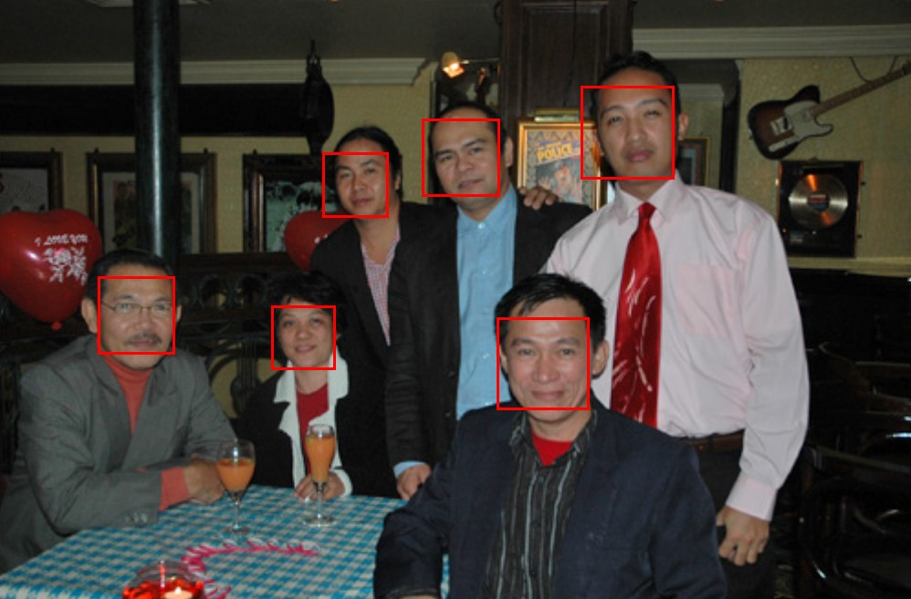

At the Financial Times-Nikkei conference on The Future of AI, Robots, and Us a few weeks ago, Andreessen Horowitz partner Chris Dixon spoke just before Jeremy Howard and I were on stage. Dixon said many totally reasonable things in his talk–but it’s no fun to comment on them, so I’m going to focus on something rather unreasonable that he said, which was: “A few years ago it was called big data and then it was machine learning and now it’s called deep learning”. It was not entirely clear if he was saying that these are all terms for the same thing (they are most definitely not!) or if he was suggesting that the “in” data-driven approach changes from year to year. Either way, this obscures what a complete game-changer deep learning is. It is not just the 2016 version of “big data” (which has always been an empty buzzword). It is going to have an impact the size of the impact of the internet, or as Andrew Ng suggests, the impact of electricity. It is going to affect every industry, and leaders of every type of organization are going to be wishing that they had looked into it sooner.

First, to clear up some terms:
Big Data: This was an empty marketing term that falsely convinced many people that the size of your data is what matters. It also cost companies huge sums of money on Hadoop clusters they didn’t actually need. Vendors of these clusters did everything they could to maintain momentum on this nonsense because when CEOs believe it’s the size of your hardware that counts, it’s a very profitable situation if you make, sell, install, or service that hardware…
Francois Chollet, creator of the popular deep learning library Keras and now at Google Brain, has an excellent tutorial entitled Building powerful image classification models using very little data in which he trains an image classifier on only 2,000 training examples. At Enlitic, Jeremy Howard led a team that used just 1,000 examples of lung CT scans with cancer to build an algorithm that was more accurate at diagnosing lung cancer than a panel of 4 expert radiologists. The C++ library Dlib has an example in which a face detector is accurately trained using only 4 images, containing just 18 faces!

Machine Learning: Machine learning is the science of getting computers to act without being explicitly programmed. For instance, instead of coding rules and strategies of chess into a computer, the computer can watch a number of chess games and learn by example. Machine learning encompasses a wide variety of algorithms.
Deep Learning: Deep learning refers to many-layered neural networks, one specific class of machine learning algorithms. Deep learning is achieving unprecedented state of the art results, by an order of magnitude, in nearly all fields to which it’s been applied so far, including image recognition, voice recognition, and language translation. I personally think deep learning is an unfortunate name, but that’s no reason to dismiss it. If you studied neural networks in the 80s and are wondering what has changed since then, the answer is the development of: - Using multiple hidden layers instead of just one. (Even though the Universal Approximation Theorem shows that it’s theoretically possible to just have one hidden layer, it requires exponentially more hidden units, which means exponentially more parameters to learn.) - GPGPU, programmable libraries for GPUs that allow them to be used for applications other than video games, resulting in orders of magnitude faster training and inference for deep learning - A number of algorithmic tweaks (especially the Adam optimizer, ReLU activation functions, batch normalization, and dropout) that have made training faster and more resilient - Larger datasets– although this has been a driver of progress, it’s value is often over-emphasized, as the “little data” examples above show.
Another common misconception Chris Dixon stated was that deep learning talent is incredibly scarce, and it will take years for graduate programs at the top schools to catch up to the demand. Although in the past a graduate degree from one of just a handful of schools was necessary to become a deep learning expert, this is a completely artificial barrier and no longer the case. As Josh Schwartz, chief of engineering and data science at Chartbeat, writes in the Harvard Business Review, “machine learning is not just for experts”. There has been a proliferation of cutting-edge commercially usable machine learning frameworks, machine learning specific services being released from major cloud providers Amazon and Google, tutorials, publicly released code, and publicly released data sets.
We are currently in the middle of teaching 100 students deep learning from scratch, with the only prerequisite being one year of programming experience. This will be turned into a MOOC shortly after the in-person class finishes. We’re in the 4th week of the course, and already the students are building world-class image recognition models in Python.
It is far better to take a domain expert within your organization and teach them deep learning, than it is to take a deep learning expert and throw them into your organization. Deep learning PhD graduates are very unlikely to have the wide range of relevant experiences that you value in your most effective employees, and are much more likely to be interested in solving fun engineering problems, instead of keeping a razor-sharp focus on the most commercially important problems. In our experiences across many industries and many years of applying machine learning to a range of problems, we’ve consistently seen organizations under-appreciate and under invest in their existing in-house talent. In the days of the big data fad, this meant companies spent their money on external consultants. And in these days of the false “deep learning exclusivity” meme, it means searching for those unicorn deep learning experts, often including paying vastly inflated sums for failing deep learning startups.